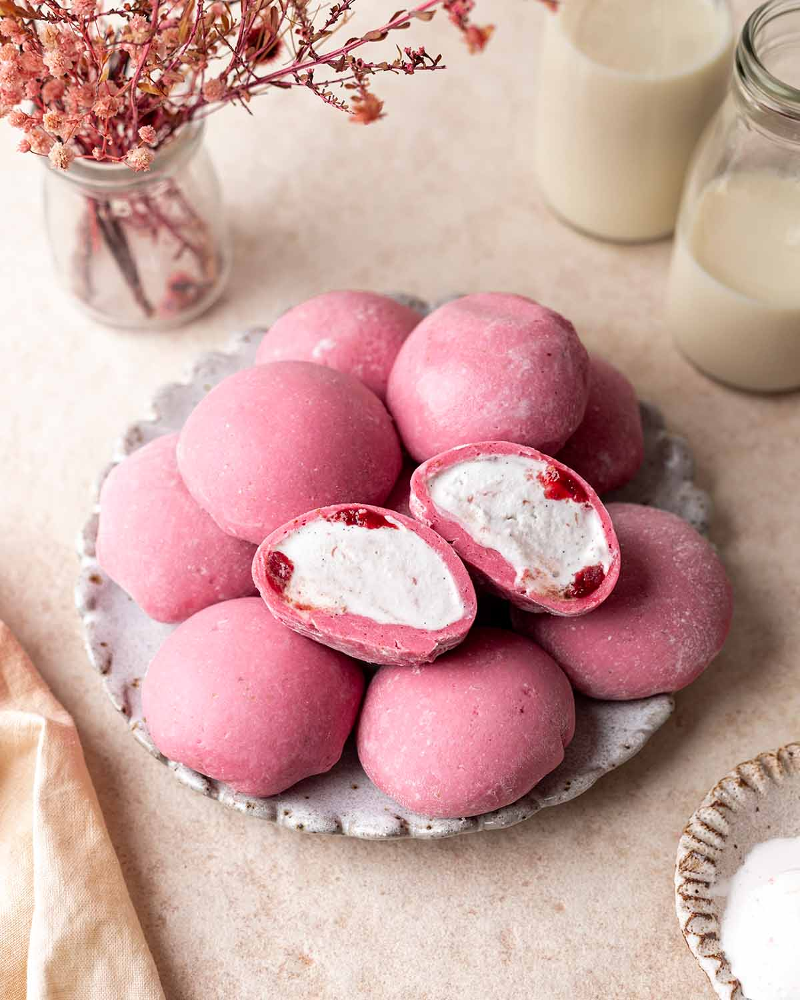

MyResipi
Resepi Mug Cake: Kek Cip Coklat dan Cookie Dough
6 Nov 2025
Aidasdibjaefc

RESEPI MUG CAKE CIP COKLAT
Bahan-bahan:
- ¼ cup all-purpose flour
- ¼ cup white sugar
- 2 tablespoons unsweetened cocoa powder
- ⅛ teaspoon baking soda
- ⅛ teaspoon salt
- 3 tablespoons milk
- 2 tablespoons canola oil
- 1 tablespoon water
- ¼ teaspoon vanilla extract
Cara-cara:
- Gather all ingredients.
- Mix flour, sugar, cocoa powder, baking soda, and salt together in a large microwave-safe mug; stir in milk, canola oil, water, and vanilla extract.
- Cook in the microwave until cake is done in the middle, about 1 minute 45 seconds.
- Enjoy!

Mochi